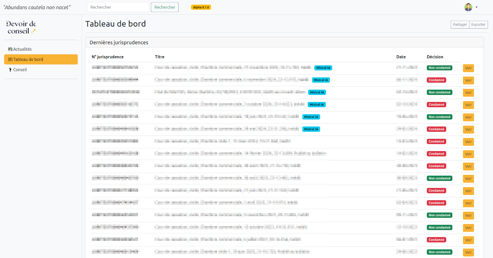
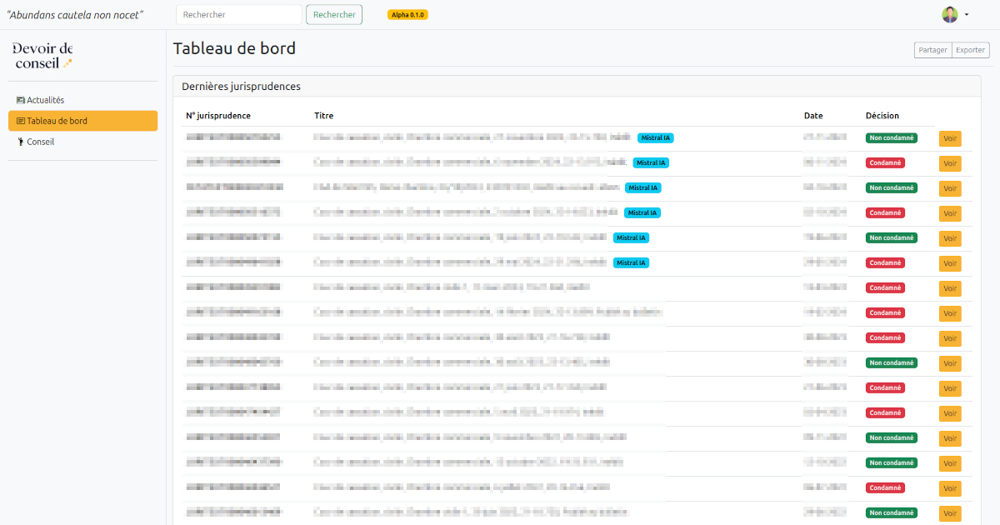

Devoir de conseil
React Mistral fastAPI MongoDB2025
Devoir de conseil est un POC IA juridique utilisant la puissance des LLM Mistral à destination des experts-comptables. Ce projet est développé conjointement avec Travis Morisson, expert-comptable en Centre-Val de Loire.
Objectif
L'expert-comptable a un devoir d'information et de conseil envers son client. Tout manquement peut entraîner une condamnation à indemniser son client, mais aussi à des sanctions disciplinaires. L'application aide les experts-comptables à renforcer leur devoir de conseil en leur signalant, à partir de jurisprudences analysées par l'IA, les raisons de condamnations encourues en cas de manquement.Architecture
Pour développer ce POC :
- Le frontend est construit avec React pour une interface fluide et moderne.
- Le backend repose sur FastAPI
- Les jurisprudences sont stockées dans une base de données MongoDB
- Le tout renforcé par des modèles Mistral sur-mesure grâce au fine-tuning. Ces derniers sont utilisés pour savoir si l'expert-comptable est condamné ou non
ainsi que les raisons. Un LLM est nécessaire car il faut comprendre l'article, le vocabulaire juridique et les subtilités de la décision rendue (cassation, rejet etc...).
Une solution à base de conditions serait moins performante car l'expert-comptable peut-être condamné en cour d'appel et qu'au final la cour de cassation soit d'accord et accepte le pourvoi : soit une décision négative.
Offcial screenshots :
 
